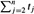
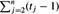
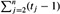

|
|
< Day Day Up > |
|
Analyzing an algorithm has come to mean predicting the resources that the algorithm requires. Occasionally, resources such as memory, communication bandwidth, or computer hardware are of primary concern, but most often it is computational time that we want to measure. Generally, by analyzing several candidate algorithms for a problem, a most efficient one can be easily identified. Such analysis may indicate more than one viable candidate, but several inferior algorithms are usually discarded in the process.
Before we can analyze an algorithm, we must have a model of the implementation technology that will be used, including a model for the resources of that technology and their costs. For most of this book, we shall assume a generic one-processor, random-access machine (RAM) model of computation as our implementation technology and understand that our algorithms will be implemented as computer programs. In the RAM model, instructions are executed one after another, with no concurrent operations. In later chapters, however, we shall have occasion to investigate models for digital hardware.
Strictly speaking, one should precisely define the instructions of the RAM model and their costs. To do so, however, would be tedious and would yield little insight into algorithm design and analysis. Yet we must be careful not to abuse the RAM model. For example, what if a RAM had an instruction that sorts? Then we could sort in just one instruction. Such a RAM would be unrealistic, since real computers do not have such instructions. Our guide, therefore, is how real computers are designed. The RAM model contains instructions commonly found in real computers: arithmetic (add, subtract, multiply, divide, remainder, floor, ceiling), data movement (load, store, copy), and control (conditional and unconditional branch, subroutine call and return). Each such instruction takes a constant amount of time.
The data types in the RAM model are integer and floating point. Although we typically do not concern ourselves with precision in this book, in some applications precision is crucial. We also assume a limit on the size of each word of data. For example, when working with inputs of size n, we typically assume that integers are represented by c lg n bits for some constant c ≥ 1. We require c ≥ 1 so that each word can hold the value of n, enabling us to index the individual input elements, and we restrict c to be a constant so that the word size does not grow arbitrarily. (If the word size could grow arbitrarily, we could store huge amounts of data in one word and operate on it all in constant time-clearly an unrealistic scenario.)
Real computers contain instructions not listed above, and such instructions represent a gray area in the RAM model. For example, is exponentiation a constant-time instruction? In the general case, no; it takes several instructions to compute xy when x and y are real numbers. In restricted situations, however, exponentiation is a constant-time operation. Many computers have a "shift left" instruction, which in constant time shifts the bits of an integer by k positions to the left. In most computers, shifting the bits of an integer by one position to the left is equivalent to multiplication by 2. Shifting the bits by k positions to the left is equivalent to multiplication by 2k. Therefore, such computers can compute 2k in one constant-time instruction by shifting the integer 1 by k positions to the left, as long as k is no more than the number of bits in a computer word. We will endeavor to avoid such gray areas in the RAM model, but we will treat computation of 2k as a constant-time operation when k is a small enough positive integer.
In the RAM model, we do not attempt to model the memory hierarchy that is common in contemporary computers. That is, we do not model caches or virtual memory (which is most often implemented with demand paging). Several computational models attempt to account for memory-hierarchy effects, which are sometimes significant in real programs on real machines. A handful of problems in this book examine memory-hierarchy effects, but for the most part, the analyses in this book will not consider them. Models that include the memory hierarchy are quite a bit more complex than the RAM model, so that they can be difficult to work with. Moreover, RAM-model analyses are usually excellent predictors of performance on actual machines.
Analyzing even a simple algorithm in the RAM model can be a challenge. The mathematical tools required may include combinatorics, probability theory, algebraic dexterity, and the ability to identify the most significant terms in a formula. Because the behavior of an algorithm may be different for each possible input, we need a means for summarizing that behavior in simple, easily understood formulas.
Even though we typically select only one machine model to analyze a given algorithm, we still face many choices in deciding how to express our analysis. We would like a way that is simple to write and manipulate, shows the important characteristics of an algorithm's resource requirements, and suppresses tedious details.
The time taken by the INSERTION-SORT procedure depends on the input: sorting a thousand numbers takes longer than sorting three numbers. Moreover, INSERTION-SORT can take different amounts of time to sort two input sequences of the same size depending on how nearly sorted they already are. In general, the time taken by an algorithm grows with the size of the input, so it is traditional to describe the running time of a program as a function of the size of its input. To do so, we need to define the terms "running time" and "size of input" more carefully.
The best notion for input size depends on the problem being studied. For many problems, such as sorting or computing discrete Fourier transforms, the most natural measure is the number of items in the input-for example, the array size n for sorting. For many other problems, such as multiplying two integers, the best measure of input size is the total number of bits needed to represent the input in ordinary binary notation. Sometimes, it is more appropriate to describe the size of the input with two numbers rather than one. For instance, if the input to an algorithm is a graph, the input size can be described by the numbers of vertices and edges in the graph. We shall indicate which input size measure is being used with each problem we study.
The running time of an algorithm on a particular input is the number of primitive operations or "steps" executed. It is convenient to define the notion of step so that it is as machine-independent as possible. For the moment, let us adopt the following view. A constant amount of time is required to execute each line of our pseudocode. One line may take a different amount of time than another line, but we shall assume that each execution of the ith line takes time ci , where ci is a constant. This viewpoint is in keeping with the RAM model, and it also reflects how the pseudocode would be implemented on most actual computers.[4]
In the following discussion, our expression for the running time of INSERTION-SORT will evolve from a messy formula that uses all the statement costs ci to a much simpler notation that is more concise and more easily manipulated. This simpler notation will also make it easy to determine whether one algorithm is more efficient than another.
We start by presenting the INSERTION-SORT procedure with the time "cost" of each statement and the number of times each statement is executed. For each j = 2, 3, . . . , n, where n = length[A], we let tj be the number of times the while loop test in line 5 is executed for that value of j. When a for or while loop exits in the usual way (i.e., due to the test in the loop header), the test is executed one time more than the loop body. We assume that comments are not executable statements, and so they take no time.
INSERTION-SORT(A) cost times 1 for j ← 2 to length[A] c1 n 2 do key ← A[j] c2 n - 1 3 ▹ Insert A[j] into the sorted sequence A[1 ‥ j - 1]. 0 n - 1 4 i ← j - 1 c4 n - 1 5 while i > 0 and A[i] > key c5  6 do A[i + 1] ← A[i] c6  7 i ← i - 1 c7  8 A[i + 1] ← key c8 n - 1
The running time of the algorithm is the sum of running times for each statement executed; a statement that takes ci steps to execute and is executed n times will contribute cin to the total running time.[5] To compute T(n), the running time of INSERTION-SORT, we sum the products of the cost and times columns, obtaining
Even for inputs of a given size, an algorithm's running time may depend on which input of that size is given. For example, in INSERTION-SORT, the best case occurs if the array is already sorted. For each j = 2, 3, . . . , n, we then find that A[i] ≤ key in line 5 when i has its initial value of j - 1. Thus tj = 1 for j = 2, 3, . . . , n, and the best-case running time is
|
T(n) |
= |
c1n + c2(n - 1) + c4(n - 1) + c5(n - 1) + c8(n - 1) |
|
= |
(c1 + c2 + c4 + c5 + c8)n - (c2+ c4 + c5 + c8). |
This running time can be expressed as an + b for constants a and b that depend on the statement costs ci ; it is thus a linear function of n.
If the array is in reverse sorted order-that is, in decreasing order-the worst case results. We must compare each element A[j] with each element in the entire sorted subarray A[1 ‥ j - 1], and so tj = j for j = 2, 3, . . . , n. Noting that
and
(see Appendix A for a review of how to solve these summations), we find that in the worst case, the running time of INSERTION-SORT is
This worst-case running time can be expressed as an2 + bn + c for constants a, b, and c that again depend on the statement costs ci ; it is thus a quadratic function of n.
Typically, as in insertion sort, the running time of an algorithm is fixed for a given input, although in later chapters we shall see some interesting "randomized" algorithms whose behavior can vary even for a fixed input.
In our analysis of insertion sort, we looked at both the best case, in which the input array was already sorted, and the worst case, in which the input array was reverse sorted. For the remainder of this book, though, we shall usually concentrate on finding only the worst-case running time, that is, the longest running time for any input of size n. We give three reasons for this orientation.
The worst-case running time of an algorithm is an upper bound on the running time for any input. Knowing it gives us a guarantee that the algorithm will never take any longer. We need not make some educated guess about the running time and hope that it never gets much worse.
For some algorithms, the worst case occurs fairly often. For example, in searching a database for a particular piece of information, the searching algorithm's worst case will often occur when the information is not present in the database. In some searching applications, searches for absent information may be frequent.
The "average case" is often roughly as bad as the worst case. Suppose that we randomly choose n numbers and apply insertion sort. How long does it take to determine where in subarray A[1 ‥ j - 1] to insert element A[j]? On average, half the elements in A[1 ‥ j - 1] are less than A[j], and half the elements are greater. On average, therefore, we check half of the subarray A[1 ‥ j - 1], so tj = j/2. If we work out the resulting average-case running time, it turns out to be a quadratic function of the input size, just like the worst-case running time.
In some particular cases, we shall be interested in the average-case or expected running time of an algorithm; in Chapter 5, we shall see the technique of probabilistic analysis, by which we determine expected running times. One problem with performing an average-case analysis, however, is that it may not be apparent what constitutes an "average" input for a particular problem. Often, we shall assume that all inputs of a given size are equally likely. In practice, this assumption may be violated, but we can sometimes use a randomized algorithm, which makes random choices, to allow a probabilistic analysis.
We used some simplifying abstractions to ease our analysis of the INSERTION-SORT procedure. First, we ignored the actual cost of each statement, using the constants ci to represent these costs. Then, we observed that even these constants give us more detail than we really need: the worst-case running time is an2 + bn + c for some constants a, b, and c that depend on the statement costs ci. We thus ignored not only the actual statement costs, but also the abstract costs ci.
We shall now make one more simplifying abstraction. It is the rate of growth, or order of growth, of the running time that really interests us. We therefore consider only the leading term of a formula (e.g., an2), since the lower-order terms are relatively insignificant for large n. We also ignore the leading term's constant coefficient, since constant factors are less significant than the rate of growth in determining computational efficiency for large inputs. Thus, we write that insertion sort, for example, has a worst-case running time of Θ(n2) (pronounced "theta of n-squared"). We shall use Θ-notation informally in this chapter; it will be defined precisely in Chapter 3.
We usually consider one algorithm to be more efficient than another if its worst-case running time has a lower order of growth. Due to constant factors and lower-order terms, this evaluation may be in error for small inputs. But for large enough inputs, a Θ(n2) algorithm, for example, will run more quickly in the worst case than a Θ(n3) algorithm.
Consider sorting n numbers stored in array A by first finding the smallest element of A and exchanging it with the element in A[1]. Then find the second smallest element of A, and exchange it with A[2]. Continue in this manner for the first n - 1 elements of A. Write pseudocode for this algorithm, which is known as selection sort. What loop invariant does this algorithm maintain? Why does it need to run for only the first n - 1 elements, rather than for all n elements? Give the best-case and worst-case running times of selection sort in Θ-notation.
Consider linear search again (see Exercise 2.1-3). How many elements of the input sequence need to be checked on the average, assuming that the element being searched for is equally likely to be any element in the array? How about in the worst case? What are the average-case and worst-case running times of linear search in Θ-notation? Justify your answers.
[4]There are some subtleties here. Computational steps that we specify in English are often variants of a procedure that requires more than just a constant amount of time. For example, later in this book we might say "sort the points by x-coordinate," which, as we shall see, takes more than a constant amount of time. Also, note that a statement that calls a subroutine takes constant time, though the subroutine, once invoked, may take more. That is, we separate the process of calling the subroutine-passing parameters to it, etc.-from the process of executing the subroutine.
[5]This characteristic does not necessarily hold for a resource such as memory. A statement that references m words of memory and is executed n times does not necessarily consume mn words of memory in total.
|
|
< Day Day Up > |
|